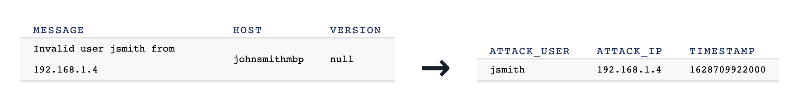

Detect and analyze SSH attacks
There are lots of ways SSH can be abused, but one of the most straightforward ways to detect a problem is to monitor for failed login attempts. This recipe processes Syslog data and streams out pairs of usernames and IP addresses from failed login attempts. With ksqlDB, you can filter and react to events in real time rather than performing historical analysis of Syslog data at rest.

Step by step
Set up your environment
Setup your environment in Confluent Cloud, a fully-managed Apache Kafka® service, and within your environment create a ksqlDB application.
ksqlDB supports a SQL language for processing the data in real-time (and will soon support connector integration for reading and writing data to other data sources and sinks). Execute the recipe with the provided SQL commands using the Confluent Cloud ksqlDB editor.
Read the data in
This recipe demonstrates how to run a self-managed connector to push syslog data into a Kafka topic called syslog on Confluent Cloud.
Create the below Dockerfile to bundle a connect worker with the kafka-connect-syslog connector:
FROM confluentinc/cp-server-connect-base:6.2.0
ENV CONNECT_PLUGIN_PATH="/usr/share/java,/usr/share/confluent-hub-components"
USER root
COPY --chown=appuser:appuser include/etc/confluent/docker /etc/confluent/docker
USER appuser
ARG CONNECTOR_OWNER=confluentinc
ARG CONNECTOR_NAME
ARG CONNECTOR_VERSION
RUN confluent-hub install --no-prompt confluent-hub install confluentinc/kafka-connect-syslog:1.3.4
CMD ["/etc/confluent/docker/run"]
Build the custom Docker image with this command:
docker build \
-t localbuild/connect_distributed_with_syslog:1.3.4 \
-f Dockerfile .
Next, create a docker-compose.yml file with the following content, substituting your Confluent Cloud connection information:
---
version: '2'
services:
connect:
image: localbuild/connect_distributed_with_syslog:1.3.4
hostname: connect
container_name: connect
ports:
- "8083:8083"
environment:
CONNECT_BOOTSTRAP_SERVERS: < BOOTSTRAP SERVER >
CONNECT_REST_PORT: 8083
CONNECT_GROUP_ID: "connect"
CONNECT_CONFIG_STORAGE_TOPIC: recipe-connect-configs
CONNECT_OFFSET_STORAGE_TOPIC: recipe-connect-offsets
CONNECT_STATUS_STORAGE_TOPIC: recipe-connect-status
CONNECT_REPLICATION_FACTOR: 3
CONNECT_CONFIG_STORAGE_REPLICATION_FACTOR: 3
CONNECT_OFFSET_STORAGE_REPLICATION_FACTOR: 3
CONNECT_STATUS_STORAGE_REPLICATION_FACTOR: 3
CONNECT_KEY_CONVERTER: "org.apache.kafka.connect.storage.StringConverter"
CONNECT_VALUE_CONVERTER: "org.apache.kafka.connect.json.JsonConverter"
CONNECT_REST_ADVERTISED_HOST_NAME: "connect"
CONNECT_PLUGIN_PATH: "/usr/share/java,/usr/share/confluent-hub-components"
CONNECT_LOG4J_ROOT_LOGLEVEL: INFO
CONNECT_LOG4J_LOGGERS: org.reflections=ERROR
# Connect worker
CONNECT_SECURITY_PROTOCOL: SASL_SSL
CONNECT_SASL_JAAS_CONFIG: < SASL JAAS CONFIG >
CONNECT_SASL_MECHANISM: PLAIN
# Connect producer
CONNECT_PRODUCER_SECURITY_PROTOCOL: SASL_SSL
CONNECT_PRODUCER_SASL_JAAS_CONFIG: < SASL JAAS CONFIG >
CONNECT_PRODUCER_SASL_MECHANISM: PLAIN
# Connect consumer
CONNECT_CONSUMER_SECURITY_PROTOCOL: SASL_SSL
CONNECT_CONSUMER_SASL_JAAS_CONFIG: < SASL JAAS CONFIG >
CONNECT_CONSUMER_SASL_MECHANISM: PLAIN
Run the container with this:
docker-compose up -d
Now you should have Syslog messages being written to the syslog topic in Confluent Cloud.
Optional: If you do not have a real data source to connect to with properly formatted data, or you just want to execute this recipe without external dependencies, no worries! In the next section, we'll show you how to insert data into the streams for testing using ksqlDB INSERT INTO.
Run the stream processing app
Process the syslog events by flagging events with invalid users, stripping out all the other unnecessary fields, and creating just a stream of relevant information. There are many ways to customize the resulting stream to fit the business needs: this example also demonstrates how to enrich the stream with a new field FACILITY_DESCRIPTION with human-readable content.
NOTE: The Confluent Cloud Console does not allow you to execute this code in the ksqlDB editor as a single block. This limitation will be removed in the next release, but until then, copy and paste each statement into the editor and execute them one at a time.
-- Extract relevant fields from log messages
CREATE STREAM syslog (
ts varchar,
host varchar,
facility int,
message varchar,
remote_address varchar
) WITH (
KAFKA_TOPIC = 'syslog',
VALUE_FORMAT = 'json',
PARTITIONS = 6
);
-- Flag events with invalid users, and enrich with a new field 'FACILITY_DESCRIPTION'
CREATE STREAM invalid_users AS
SELECT
FORMAT_TIMESTAMP(ts, 'yyyy-MM-dd HH:mm:ss') AS syslog_timestamp,
host,
facility,
message,
remote_address,
CASE WHEN facility = 0 THEN 'kernel messages'
WHEN facility = 1 THEN 'user-level messages'
WHEN facility = 2 THEN 'mail system'
WHEN facility = 3 THEN 'system daemons'
WHEN facility = 4 THEN 'security/authorization messages'
WHEN facility = 5 THEN 'messages generated internally by syslogd'
WHEN facility = 6 THEN 'line printer subsystem'
ELSE '<unknown>'
END AS facility_description
FROM syslog
WHERE message LIKE 'Invalid user%'
EMIT CHANGES;
-- Create actionable stream of SSH attacks, enriched with user and IP
CREATE STREAM ssh_attacks AS
SELECT
syslog_timestamp,
host,
facility_description,
SPLIT(REPLACE(message, 'Invalid user ', ''), ' from ')[1] AS attack_user,
remote_address AS attack_ip
FROM invalid_users
EMIT CHANGES;
In the previous section Read the data in, if you did not have a real data source to connect to, you can now use ksqlDB to insert example events into the source topics with the following statements:
-- tenant_id is in the form of a resource name used to indicate the
-- data center provider, country, regional locale, and tenant id
INSERT INTO tenant_occupancy (tenant_id, customer_id) VALUES ('dc:eqix:us:chi1:12', 924);
INSERT INTO tenant_occupancy (tenant_id, customer_id) VALUES ('dc:eqix:us:chi1:10', 243);
INSERT INTO tenant_occupancy (tenant_id, customer_id) VALUES ('dc:kddi:eu:ber1:15', 924);
INSERT INTO tenant_occupancy (tenant_id, customer_id) VALUES ('dc:kddi:eu:ber1:20', 123);
INSERT INTO tenant_occupancy (tenant_id, customer_id) VALUES ('dc:kddi:cn:hnk2:11', 243);
-- power readings contain two distinct readings. The current total utilization of the
-- panel, and the monthly total wattage usage for the referenced tenant
INSERT INTO panel_power_readings (panel_id, tenant_id, panel_current_utilization, tenant_kwh_usage) VALUES (1, 'dc:eqix:us:chi1:12', 1.05, 1034);
INSERT INTO panel_power_readings (panel_id, tenant_id, panel_current_utilization, tenant_kwh_usage) VALUES (2, 'dc:eqix:us:chi1:10', 0.85, 867);
INSERT INTO panel_power_readings (panel_id, tenant_id, panel_current_utilization, tenant_kwh_usage) VALUES (1, 'dc:kddi:eu:ber1:15', 0.54, 345);
INSERT INTO panel_power_readings (panel_id, tenant_id, panel_current_utilization, tenant_kwh_usage) VALUES (2, 'dc:kddi:eu:ber1:20', 0.67, 288);
INSERT INTO panel_power_readings (panel_id, tenant_id, panel_current_utilization, tenant_kwh_usage) VALUES (1, 'dc:kddi:cn:hnk2:11', 1.11, 1119);
INSERT INTO panel_power_readings (panel_id, tenant_id, panel_current_utilization, tenant_kwh_usage) VALUES (1, 'dc:eqix:us:chi1:12', 1.01, 1134);
INSERT INTO panel_power_readings (panel_id, tenant_id, panel_current_utilization, tenant_kwh_usage) VALUES (2, 'dc:eqix:us:chi1:10', 0.75, 898);
INSERT INTO panel_power_readings (panel_id, tenant_id, panel_current_utilization, tenant_kwh_usage) VALUES (1, 'dc:kddi:cn:hnk2:11', 1.10, 1201);
Cleanup
To clean up the ksqlDB resources created by this recipe, use the ksqlDB commands shown below (substitute stream or topic name, as appropriate).
By including the DELETE TOPIC clause, the stream or table's source topic is also deleted, asynchronously.
DROP STREAM IF EXISTS <stream_name> DELETE TOPIC;
DROP TABLE IF EXISTS <table_name> DELETE TOPIC;
If you also created connectors, you'll need to remove those as well.